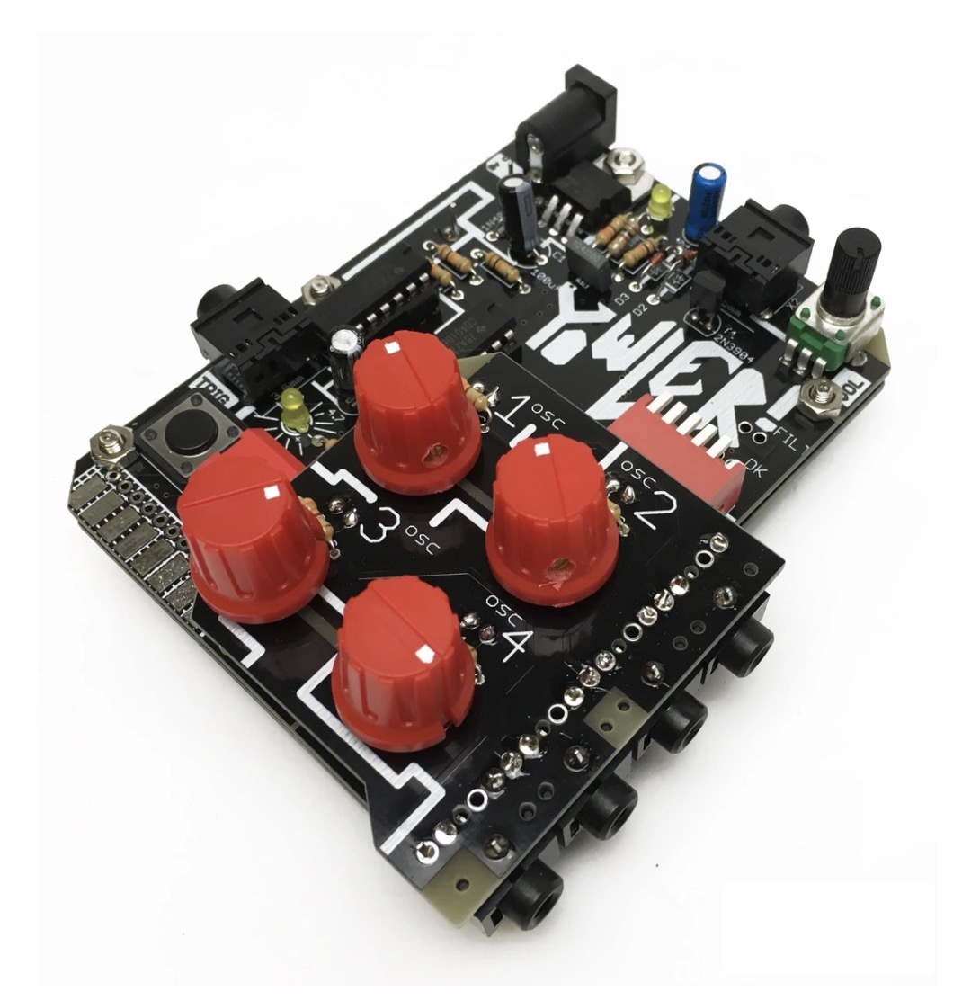

Versatile small form noise/drone synth.

Kickstarter funded project now opened. - External trigger + Diode VCA: trigger the Yowler from external gear, use it as a drum synth, built in trigger button and latch + trigger in acts as a simple vca! 4 - Oscillators and 2 XOR mixers: lots of grinding, driving sounds, osc 3 and 4 can be turned off and on. - Built in speaker + mono/stereo output: means you can use it with mono gear like guitar pedals or a modular synth, or stereo gear like mixers, headphones etc… - Pitch knobs + light dependent pitch control: get crazy sounds from the three oscillators by shining light on them.
All DB data
- Name: Yowler
- Author: Cat full of ghosts
- Link: https://github.com/cfoge/the_Yowler
- Demo: https://www.youtube.com/watch?v=O0ltJwYQ1AM
- Picture: ../pics/yowler.jpg
- Description: Versatile small form noise/drone synth.
- Notes: Kickstarter funded project now opened. - External trigger + Diode VCA: trigger the Yowler from external gear, use it as a drum synth, built in trigger button and latch + trigger in acts as a simple vca! 4 - Oscillators and 2 XOR mixers: lots of grinding, driving sounds, osc 3 and 4 can be turned off and on. - Built in speaker + mono/stereo output: means you can use it with mono gear like guitar pedals or a modular synth, or stereo gear like mixers, headphones etc… - Pitch knobs + light dependent pitch control: get crazy sounds from the three oscillators by shining light on them.
- Artifacts: {“Schematic”=>true}{“PCB”=>true}{“BOM”=>true}{“FW”=>false}{“Docs”=>true}{“Enclosure”=>true}
- Tags: Analog
- Level: Newbe
{kind=link}